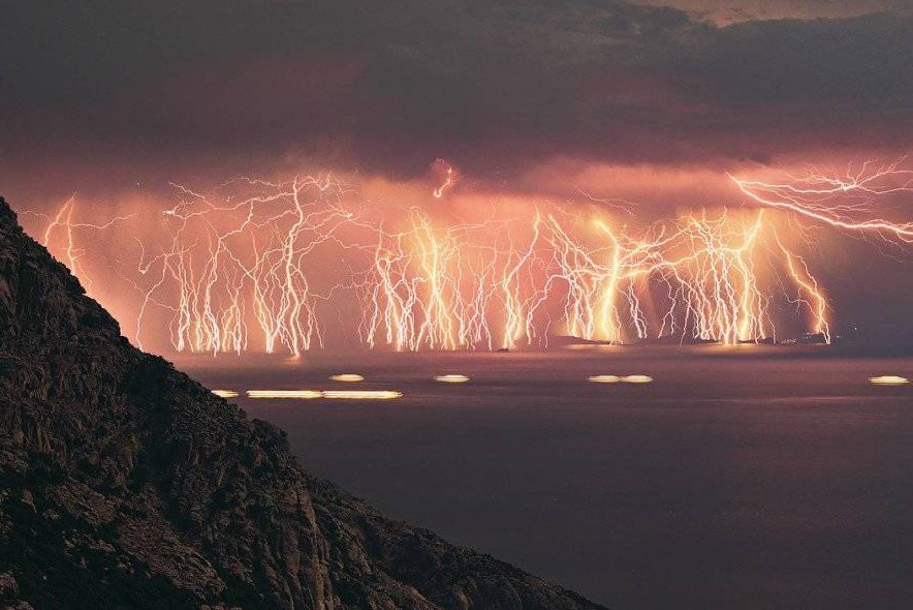
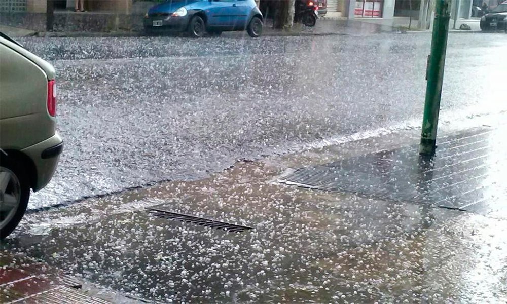
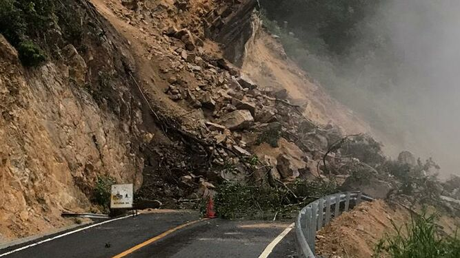

Los fenómenos atmosféricos o fenómenos meteorológicos, son todos los eventos que tienen lugar en la atmósfera terrestre. En su mayoría se deben a variaciones y desequilibrios locales de temperatura y densidad, es decir, de los vientos, que van siempre de las zonas de aire más frío y denso, hacia las zonas de aire más cálido y dilatado. La atmósfera terrestre comprende diversos estratos a medida que se aleja de la superficie terrestre, variando en sus condiciones de presión y temperatura. Lo mismo ocurre cuando se cambia de latitud y longitud, de acuerdo a las diversas regiones climáticas del mundo, que cambian en relación de humedad, densidad y cantidad de energía solar recibida. Los cambios en las fuerzas y propiedades de la atmósfera causan diversos fenómenos, como el ciclo hidrológico y los distintos ciclos meteorológicos del globo. También causan fenómenos atmosféricos más intensos o erráticos, que bien pueden transformarse en una catástrofe natural, o incluso de llamativos efectos ópticos atmosféricos.

Un deslizamiento, como término general, es un movimiento de masa, sea esta masa suelo, roca sólida o combinaciones. Los movimientos de masa se dividen en tres tipos fundamentales: desprendimientos, deslizamientos y flujos. El desprendimiento es cuando el movimiento implica la caída libre de fragmentos sueltos de cualquier tamaño y es común en pendientes muy empinadas donde el material suelto no puede mantenerse adherido a la superficie. Los deslizamientos se producen cuando el material, unido, se mueve a lo largo de una superficie de debilidad, que puede ser, por ejemplo, una falla. El flujo se produce cuando el material, generalmente saturado con agua, se desplaza pendiente abajo en forma de fluido viscoso. Los riesgos para la salud asociados a los deslizamientos de tierra y los aludes de barro incluyen los siguientes: Corrientes rápidas de agua o detritos que pueden provocar traumatismos. Cables eléctricos, cañerías de agua o gas y alcantarillas averiadas que pueden causar lesiones o enfermedades.